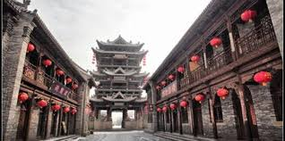

榆次旅游资源丰富，猫儿岭有战国时期的古墓群，坐落在榆次老城的明代清虚阁全部为木制结构；榆次城隍庙是全国保存最完整的城隍庙之一，属国家一级保护文物，并受到联合国的捐款修缮。榆次境内国家级、省级、市区级文物保护单位130多处，古代城池、衙署、寺观、庙坛、堡寨等遍布全区。形成了“庄园、老城、古村、森林公园”四位一体的格局。常家庄园享有“中国儒商第一家”的美誉，榆次老城是“中国封建城池文化的大观园”，乌金山国家级森林公园堪称“天然氧吧”。于2005年9月竣工开放的东赵后沟古村，被确定为中国民间文化遗产抢救工程古村落调查保护示范基地。